Executives
As part of the executive team, we oversee the progress of the other teams and make sure
everything is going smoothly. We also organize meetings with directors to try and encourage a friendly and supportive
environment as much as possible!
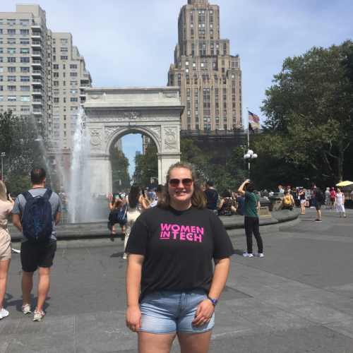
Halina Tracey
President
htracey@calpoly.edu
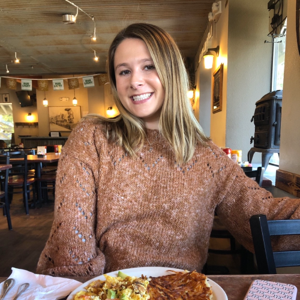
Kaitlin Clever
Vice President
kclever@calpoly.edu
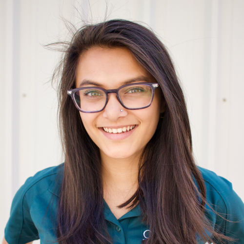
Nayana Tiwari
Department Liaison
natiwari@calpoly.edu
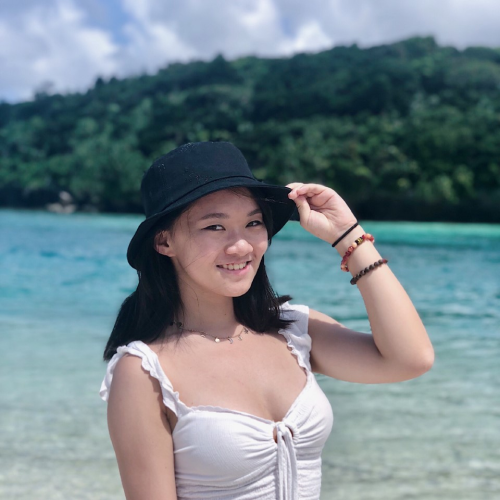
Maggie Yang
Administrator
myang57@calpoly.edu
Campus
Campus team focuses on hosting fun events for our WISH members. Whether it's a social event,
WISH general meeting, or a study session, you know we will have a good time!
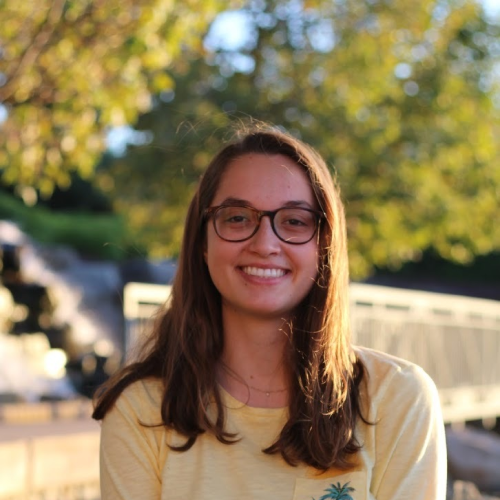
Kelsey McDonough
Campus Director
kjmcdono@calpoly.edu

Elaine Sabine Pranadjaya
Campus Officer
eprandj@calpoly.edu
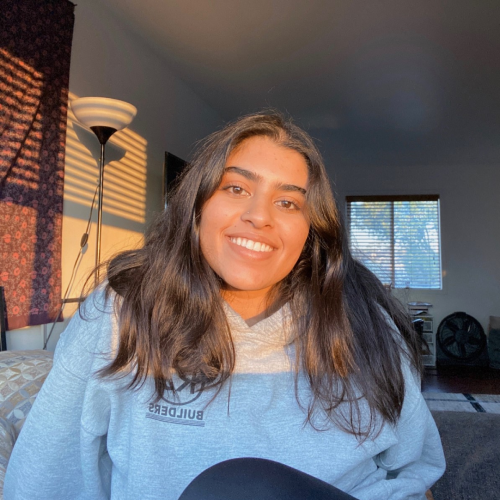
Comal Virdi
Campus Officer
covirdi@calpoly.edu
Diversity
The diversity team is here to help support underrepresented and diverse students. Our
goal is to create a space that promotes collaboration and community among students of all backgrounds. We aim to inform
members of the cultural events that are happening through Cal Poly. We need to provide an outlet for students' c
oncerns to be heard. The diversity team is here to help!
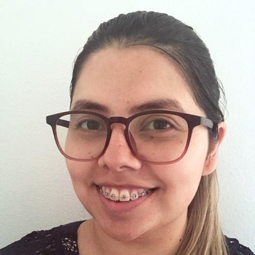
Andrea Salazar Santos
Director Director
asalaz41@calpoly.edu
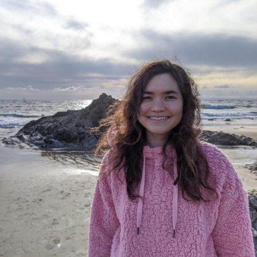
Iris Mecartney
Diversity Officer
imecartn@calpoly.edu
Outreach
The Outreach team puts on events to encourage students within the SLO and Central Coast
community from Kindergarten to High School to learn about the technology field pertaining to Software Engineering,
Computer Science, Computer Engineering, and Electrical Engineering. In the past, the WISH Outreach team has organized
volunteers to help with at elementary school Code Clubs and Robotics, hosted software and hardware workshops for middle
schoolers, and panels for high school students. Our goal is to inspire these young girls and boys to spark a passion for
technology and see a future for themselves in the tech industry.
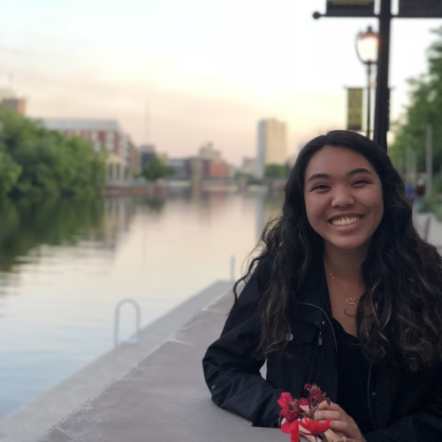
Jaelyn Domingo
Outreach Director
jdomin31@calpoly.edu

Piper Feldman
K-8 Outreach Officer
pfeldman@calpoly.edu
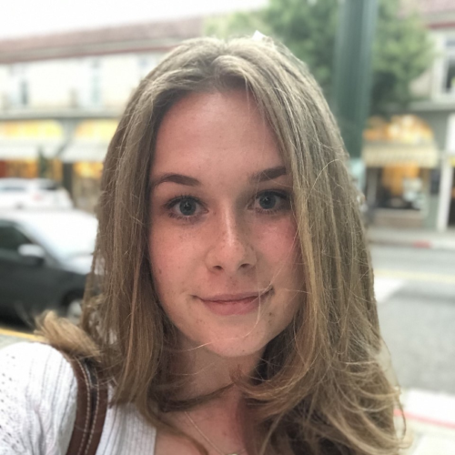
Polina Volnuhina
Highschool Outreach Officer
pvolnuhi@calpoly.edu

Anushree Parmar
Hardware Outreach Officer
aaparmar@calpoly.edu
Publicity
The Publicity Team is in charge of supporting the public face of WISH. We send out the WISH Weekly, update
the Facebook and Instagram pages, and maintain the WISH website. We also work on the WISH branding including logos, T-shirts, flyers, stickers, etc.
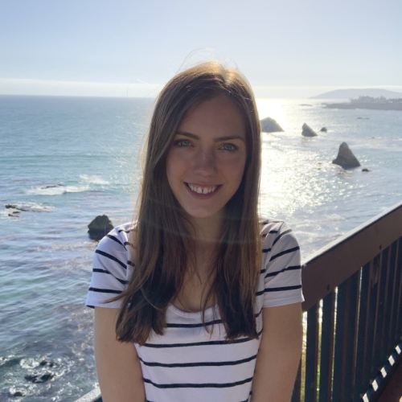
Ana Marsh
Publicity Director
aamarsh@calpoly.edu

Shaine Palabrica
Graphic Designer
spalabri@calpoly.edu

Anna Reid
Webmaster
areid02@calpoly.edu
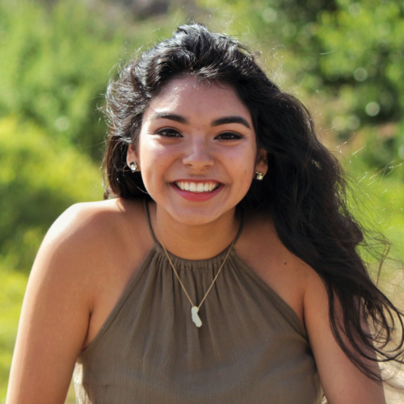
Melina Lopez
Publicity Officer
mlope172@calpoly.edu
Corporate
Corporate is a WISH subcommittee that works with our industry partners to help put on networking
events, workshops and other events to help WISH members connect with and explore the computer science industry.

Yogi Sunkara
Corporate Director
ysunkara@calpoly.edu
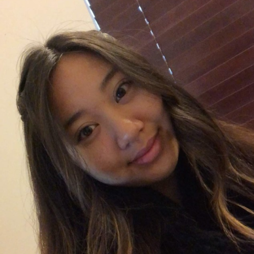
Jenisa Nguyen
Corporate Officer
jnguy392@calpoly.edu
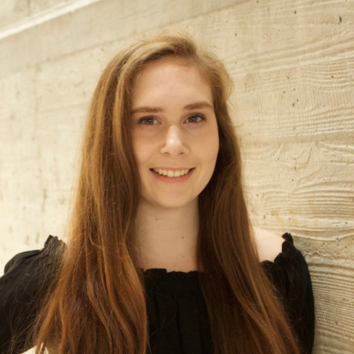
Jillian Quinn
Corporate Officer
jiquinn@calpoly.edu
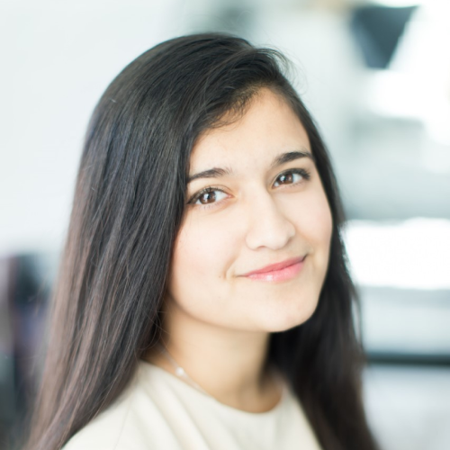
Richa Gadgil
Corporate Officer
rgadgil@calpoly.edu
Mentorship
Mentorship is responsible for planning pairings between incoming WISH students and existing
members to foster a friendly, technical, and reliable relationships and introduce a welcoming community within WISH. We
organize events like mentor/mentee reveals, game nights, and more.
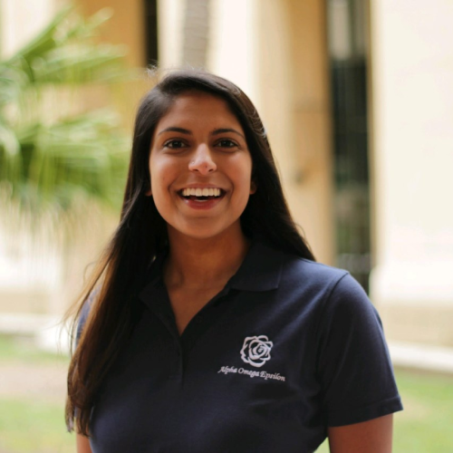
Mahima Choudhary
Mentorship Director
mchoudha@calpoly.edu
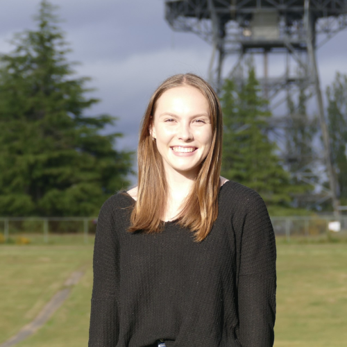
Elena Fowler
Mentorship Officer
erfowler@calpoly.edu
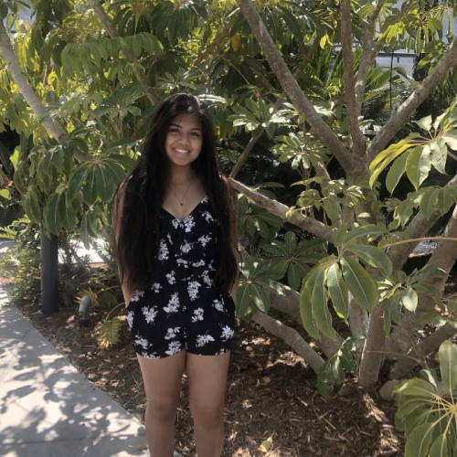
Rhoyalinn Cereno
Mentorship Officer
rcereno@calpoly.edu
Technology
Tech team hosts events to help WISH members be successful in their classes and explore
different areas of computing. From a workshop on designing and creating a 3-D printed fan to a virtual Bob Ross paint
night, tech team offers a fun and supportive environment for members to learn and bond with other students in their major!
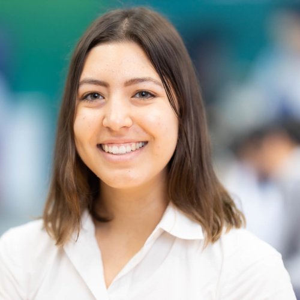
Reilly Salkowski
Tech Director
rsalkows@calpoly.edu
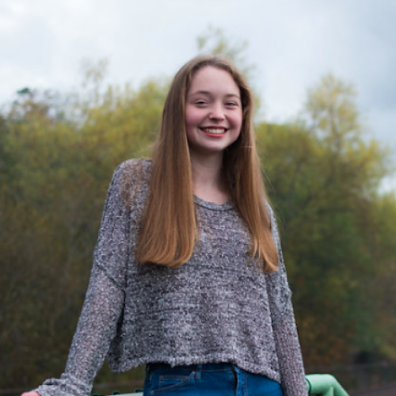
Annie Joss
Tech Officer
anjoss@calpoly.edu

Laura Camacho
Tech Officer
lcamac02@calpoly.edu

Sindhu Srivats
Tech Officer
sisrivat@calpoly.edu